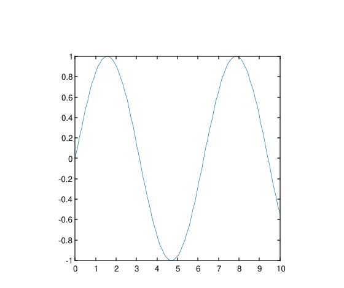
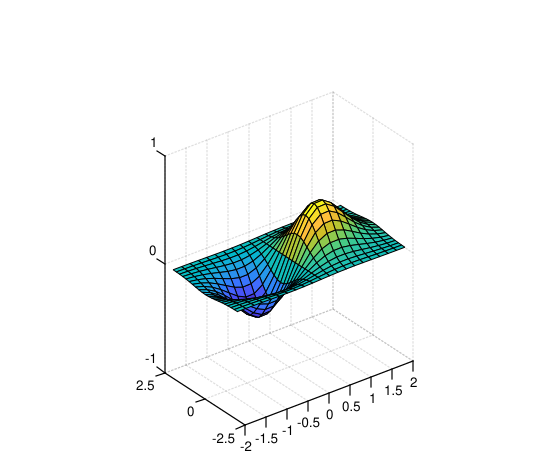
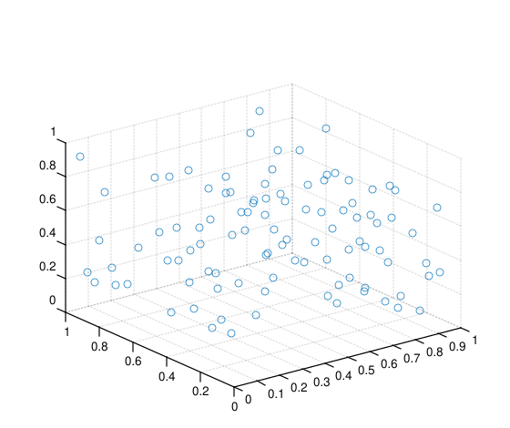
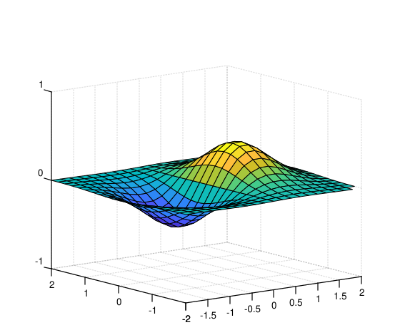
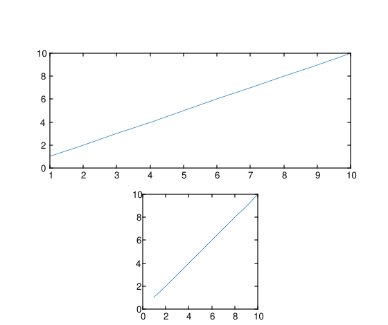

pbaspect(ratio)
pb = pbaspect()
pbaspect('auto')
pbaspect('manual')
m = pbaspect('mode')
pbaspect(ax, ...)
| Parameter | Description |
|---|---|
| ratio |
Three-element vector of positive values specifying the relative lengths of the x, y, and z axes in the plot box. |
| 'auto' |
Set the plot box aspect ratio mode to automatic. |
| 'manual' |
Set the plot box aspect ratio mode to manual. |
| 'mode' |
Query the current plot box aspect ratio mode ('auto' or 'manual'). |
| ax |
Target axes object. If not specified, uses current axes. |
| Parameter | Description |
|---|---|
| pb |
Three-element vector representing the current plot box aspect ratio. |
| m |
Current plot box aspect ratio mode: 'auto' or 'manual'. |
pbaspect controls the relative lengths of the x, y, and z axes in the plot box.
pbaspect(ratio) sets the plot box aspect ratio for the current axes. ratio is a three-element vector of positive values. For example, [3 1 1] means the x-axis is three times as long as the y- and z-axes.
pb = pbaspect() returns the current plot box aspect ratio as a three-element vector.
pbaspect('auto') sets the plot box aspect ratio mode to automatic, enabling the axes to choose the ratio.
pbaspect('manual') sets the mode to manual and uses the ratio stored in the axes.
m = pbaspect('mode') returns the current mode, either 'auto' or 'manual'.
pbaspect(ax, ...) operates on the axes specified by ax instead of the current axes.
Setting the plot box aspect ratio disables the stretch-to-fill behavior of the axes.
x = linspace(0,10,100);
y = sin(x);
plot(x, y)
pbaspect([1 1 1])
[x, y] = meshgrid(-2:0.2:2);
z = x .* exp(-x.^2 - y.^2);
surf(x, y, z)
pbaspect([2 1 1])
disp(pbaspect('mode'))
X = rand(100,1);
Y = rand(100,1);
Z = rand(100,1);
scatter3(X, Y, Z)
pbaspect([3 2 1])
pbaspect('auto')
[x, y] = meshgrid(-2:0.2:2);
z = x .* exp(-x.^2 - y.^2);
surf(x, y, z)
pb = pbaspect()
disp(pb)
f = figure();
ax1 = subplot(2, 1, 1);
plot(ax1, 1:10)
ax2 = subplot(2, 1, 2);
plot(ax2, 1:10)
pbaspect(ax2, [2 2 1])
| Version | Description |
|---|---|
| 1.16.0 | initial version |